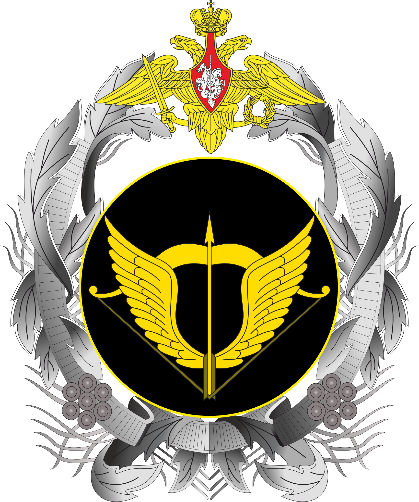

Special Operations Forces (Russia)
Info
- Founded in 2009
- The number is unknown, but the majority of them are already dead
- Big part of them died in Hostomel airport, where they lose a fight to ukrainian conscripts
- Commander Valery Flustikov
- 
- Operations
- Anti-piracy operations
- Armed conflict in the North Caucasus
- Annexation of Crimea
- Russia's military operation in Syria
- Russian-Ukrainian war
Organization
- Structure
- Special purpose center "Senezh"
- Special purpose center "Kubinka"
- Armament
- МП-443 "Grach"
- ПП-19 "Vityaz"
- АК-12
- Orsis Т5000
- РПК-16
- ГМ-94
- Selection
- The selection takes place at the Ryazan Airborne Command School
- Skydiving, mountaineering, swimming and diving are taught in "Senezh".
- Kubinka-2 focuses on fleet-related operations

Liquidated "Tiger" of special forces of the Russian Federation

Russian special forces sniper in Syria